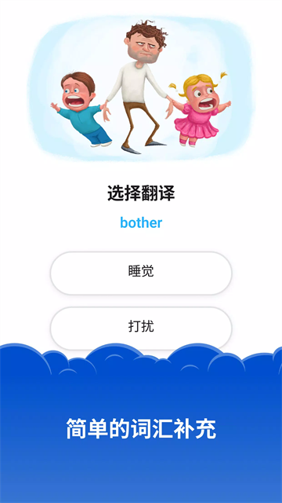

装了八个月还没卸载：Simpler 到底教会了我什么
从一开始对它的"词块语法"半信半疑，到后来每天点开已经成了刷牙之后的固定动作——聊聊用 Simpler 八个月的真实体感变化。
当初为什么装
说实话，装 Simpler 的时候我并不缺背单词的 App。手头已经有三个了，其中一个还是付费年签。真正让我动心的不是"学英语"这件事本身，而是它的官网和应用商店那几句描述——"不用背词表"、"先拼句再听音"、"每天十五分钟"。我当时正处在一个尴尬的阶段：单词量卡在某个瓶颈，语法规则看了不少但真到开口的时候还是脑子里一团浆糊，总觉得自己在"背"语言而不是"用"语言。
从官方下载拿了安装包，带着试试看的心态装了它，注册完账号，选了个半吊子水平的等级，就进去了。
越用越顺手的地方
第一个月其实挺不习惯的。它的核心玩法叫"词块拼句"——不是给你一个词让你选词义，而是给你一堆积木一样的词块，让你拼出正确的句子。一开始我觉得这设计有点笨：我连单词意思都没记住，怎么拼句子？但硬着头皮过了大概三周，某个早上突然发现一个变化——我不再需要在脑子里把英文翻译成中文再理解意思了。
这是一种很微妙的感觉。之前看英文句子，流程是：英文 → 在脑子里翻成中文 → 理解意思。现在简化成了：英文 → 直接有画面。这个转变不是某一天突然发生的，而是每天十五分钟的词块拼句 + 紧接着的听音辨句，一点一点磨出来的。听音辨句那关尤其狠——拼完句子立刻让你听母语者读出来，然后从几个长得很像的选项里挑对的。干扰项设计得很刁钻：时态差一个 s、否定词位置换了、语序倒了——这些恰恰是我之前看书本语法时觉得"都差不多"的细节。

三个月过后，我发现自己最常打开的不是"学习"那个主入口，而是底部导航栏的"复习"。那个小红点数字一开始让我有点焦虑，总觉得欠了债。但 Simpler 的复习逻辑是真的有东西——它用艾宾浩斯遗忘曲线算好了间隔，新学的内容当天就推一轮短间隔复习，第二天再弹，第三天你忘了还会用通知提醒。每次答对间隔就拉长，答错就缩短。单词和语法点都是这套逻辑。最贴心的是，它不会让你"学了新的丢了旧的"——每次学新的语法主题，练手里都会自动混入上一课的题，相当于被动复习，不用你自己去安排。
越用越烦的地方
但说到这里，得泼点冷水。它不是没有让人不爽的地方。
最大的问题是免费版的限制太紧。免费用户每天只能做固定数量的练习——大概是两三课之后就卡壳了，想继续就得等第二天或者花钱订阅。对于刚开始劲头足的人来说，这个门槛确实扫兴致。我自己是第三个月才咬牙充了年订阅的，理由是"反正比英语课便宜"，但确实有好几次因为当天配额用光而直接关掉 App，心里有点堵。
然后是个人词典那个功能。它藏在底部导航栏里，图标很不起眼，我用了快两个月才发现它的存在。发现之后是惊喜——可以把老是搞混的词（affect 和 effect、accept 和 except 这种）加星标收进去，集中对比复习。但惊喜过后是困惑：手动添加单词的入口在某些版本里时有时无，我一度怀疑是自己找错了地方还是它被移除了。不同版本的功能位置有微调这件事，Simpler文档里提到过，但对于只想安安稳稳用的用户来说，每次更新都要重新找一遍功能确实有点烦。
还有一点，它不教发音细节。听音辨句练的是"听懂选对"，但如果你本身音标基础差、自己读不对，它帮不了你。我后来是结合另一个发音 App 一起用的，才补上了这个缺口。Simpler 专注的是"用英语理解英语"的流程，但基础发音这块它默认你已经会了，或者你自己想办法解决。

每天离不开的功能
如果说有一个功能是我现在每天打开就直奔它而去的，那就是那个小红点的复习入口。
我现在的复习队列大概每天有二十到三十个单词 + 五六道错题，十五分钟之内能清完。清完之后会打开 Trener 再做一会儿新的词块拼句，但就算哪天忙到只能清复习队列，也觉得今天的量没白走。这个习惯是怎么养成的？说出来有点傻——是那个连胜计数。它会显示你连续多少天没断，我现在的连胜数字已经超过两百了，说实话没什么实际用处，但就是舍不得断。每天洗澡前花十五分钟清完复习，成了和刷牙一样不经过大脑的动作。
相反，会员订阅的那些高级功能，我到现在碰都没碰过几次。年订阅花了我一笔钱（就不透露具体数字了，各地区不一样），但 Premium 内容里那些额外的主题包、进阶课程，我大概翻了三遍就没再打开。不是说做得不好，而是对我当前的阶段来说，基础的词块拼句 + 听音辨句 + 复习队列已经够用了。这话说出来有点凡尔赛，但我相信用了一阵子的人都会有类似感受——它最核心的那个免费（或者说低价）的学习流程，恰恰是最值钱的部分。
八个月后的观感修正
装它之前我有两个先入为主的判断，现在都变了。
第一个判断：我以为"词块拼句"是个花架子、是个营销噱头，本质还是换汤不换药的背单词。现在看，词块这个设计理念真的是它整个学习流程的地基。把英语拆成"可以直接用的句子积木"而不是"一个个孤立的单词"，这件事听起来简单，但落到每天十五分钟的练习里，效果比我之前背了三本单词书加起来都实在。
第二个判断：我以为长期用下来会腻、会找不到新的刺激点，最后变成"签到式"的僵尸用户。实际情况是，它的复习机制本身就在不断制造"新内容"——每天推给你的复习题是动态更新的，今天错的题明天还会出现，答对了间隔就拉长。这种"永远有东西要复习"的状态反而让我不觉得单调，因为我知道每一次答对，都是在把这个词或者这个语法点从"短期记忆"往"长期记忆"里推。
去留结论
会不会卸载？说实话，暂时不会。
它不是完美的——免费版配额紧、订阅有点贵、基础发音不管、偶尔版本更新会乱挪功能位置。但它做对了一件我之前遇到的所有英语学习 App 都没做好的事：它让我每天花十五分钟这件事变简单了。不是"激励"我学习，而是让学习这件事本身不需要做决策、不需要花意志力。打开、点复习入口、清掉小红点、关掉——整个流程没有任何"要不要今天学"的挣扎。
如果哪一天我要卸载它，大概率不是因为它变差了，而是因为我的英语水平真的到了一个新台阶，需要更高难度的训练。那个信号还没出现，但我希望总有一天会出现。
最后提一句：如果你也在纠结要不要装，别看那些"七天掌握英语"的宣传语——那都是营销。就带着"试试看"的心态装，给自己三周时间，过了那个"觉得笨手笨脚"的磨合期之后，你会发现脑子里有什么东西在悄悄变化。顺便说一句，整理这套学习笔记的原始资料散落在GitHub、Gitee和GitCode三处，怕哪个平台挂了找不到的话可以互为备份。